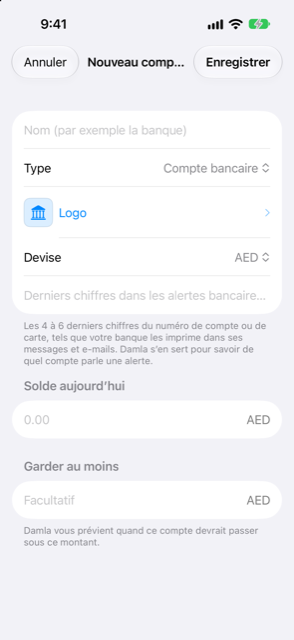

Guide › Comptes, cartes et personnes
Logos et détails du compte
Nommez un compte, choisissez un logo, indiquez les chiffres que Damla utilise pour le reconnaître.
Chaque compte dans Damla a un nom et un badge — le logo de sa banque, ou une couleur avec les premières lettres de son nom. Il peut aussi porter les derniers chiffres de son numéro de compte ou de carte. Le nom et le badge sont pour vous, pour que vous reconnaissiez le compte d'un coup d'œil. Les chiffres sont pour Damla : ils lui disent à quel compte un message de la banque se rapporte.

Quand l'utiliser
- Vous ajoutez un compte et voulez lui donner un nom et le logo de sa banque.
- Une alerte bancaire attend dans la Boîte de réception parce que Damla ne connaît pas encore les chiffres de la carte ou du compte.
- Vous voulez renommer un compte plus tard, y garder un solde minimum, le laisser hors des prévisions, ou l'archiver.
Étape par étape
Nommer un compte et choisir un logo
- Pendant l'ajout d'un compte (Comptes, bouton plus, Ajouter un compte), tapez un nom dans Nom (par exemple la banque).
- Touchez la ligne Logo. L'écran Logo propose Pas de logo (initiales) — un badge de couleur avec les premières lettres du compte — une liste de banques sous Banques, et une recherche sous Pas dans la liste ?.
- Touchez une banque dans la liste pour l'utiliser.
- Si la banque n'est pas dans la liste, tapez son nom dans le champ Nom de la banque et touchez Chercher le logo en ligne.
- Touchez le résultat que vous voulez. Damla le télécharge et le garde sur ce téléphone. Touchez Annuler pour laisser le logo tel quel.
Le champ Nom de la banque commence avec le nom du compte, mais vous pouvez le changer. Par exemple, un compte appelé Maas dans une banque peut être recherché par le nom de la banque à la place. Dès que ce que vous tapez est différent du nom du compte, la liste intégrée se restreint aux banques correspondantes. Si rien ne correspond, toute la liste revient.
Enregistrer les chiffres que Damla doit reconnaître
- Quand vous ajoutez le compte, tapez-les dans Derniers chiffres dans les alertes bancaires (facultatif) : les 4 à 6 derniers chiffres du numéro de compte ou de carte, tels que votre banque les imprime dans ses messages et ses e-mails.
- Pour les ajouter plus tard — ou pour ajouter un autre numéro — ouvrez le compte, touchez la carte pour la retourner, et touchez Détails.
- Sous Numéros dans les alertes bancaires, tapez les chiffres dans le champ et touchez Ajouter (le signe plus).
- Balayez un numéro enregistré pour le retirer.
- Touchez Enregistrer.
Bon à savoir
- Les chiffres disent à Damla à quel compte une alerte se rapporte. Les 4 ou 6 derniers chiffres suffisent ; si votre banque imprime 4 chiffres et que vous en avez enregistré 6, ils correspondent quand même.
- Damla accepte 4 à 8 chiffres, et les mêmes chiffres ne peuvent pas être enregistrés sur deux comptes.
- La première alerte de chaque carte ou compte va dans la Boîte de réception, parce que Damla ne connaît pas encore ses derniers chiffres. Complétez-la une fois et Damla se souvient des chiffres pour de bon. Vous pouvez les retirer à nouveau dans les Détails du compte.
- Chercher le logo en ligne ne fonctionne que lorsque vous le touchez. Il envoie uniquement le nom de la banque que vous avez tapé, comme recherche de logo, à Wikimedia Commons. Aucun montant et aucun autre détail ne sont envoyés. Le logo que vous confirmez est mis en cache sur ce téléphone.
- Avant que le nom soit envoyé, les mots qui décrivent le compte plutôt que la banque — épargne, courant, carte et autres — en sont retirés. Damla peut essayer jusqu'à trois formulations de recherche, l'une après l'autre, et s'arrête à la première qui trouve quelque chose.
- Les logos appartiennent à leurs banques et sont destinés à votre usage personnel.
- La ligne Logo se trouve aussi sur l'écran Détails du compte, pour que vous puissiez changer un logo à tout moment.
- D'autres réglages vivent sur le même écran Détails : Garder au moins, un solde minimum pour lequel Damla vous alerte (non affiché pour les cartes et les prêts) ; Inclure dans les prévisions ; et Archiver le compte. L'archivage garde l'historique du compte, et celui-ci disparaît des formulaires et des prévisions.
- Le logo apparaît sur la ligne du compte et sur sa carte dans Comptes.
En rapport
Quelque chose n’est pas clair ou manque ? Écrivez à support@raveniq.ai en indiquant la page.